Used Games Store
For class I had to make a feature rich application. In doing so I made a store front for used game stores to use I call the Used Games Program. In it I show great use of object oriented design and modularity.

Modularity in the Used Games Program
In the used games program, I tried to keep a lot of it organized and separate so that it will be easy to make and understand. its to the point where I made separate packages for each state of views or even SQL and methods/variables that will need to be used across the program named Global
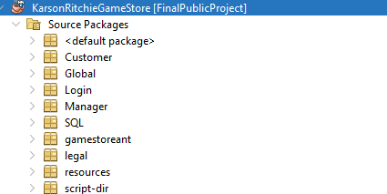The best showcase of object oriented design lies in the packages named SQL and Global
SQL Package
The SQL package is pretty straightforward. Basically any use for SQL was in this package and separated by what view needed them first.
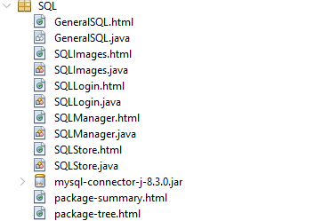GeneralSQL was used for only two methods and it was to establish the connection upon bootup and get the connection anytime it needed to
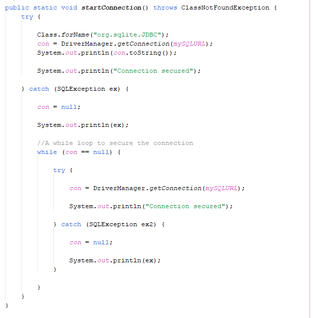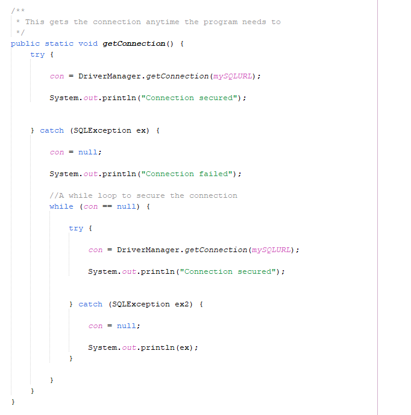
For the others it was practically any SQL method that a view needed or what images needed. Could be retrieving data for checking or even uploading data
Here is an example from the SQL Images class:
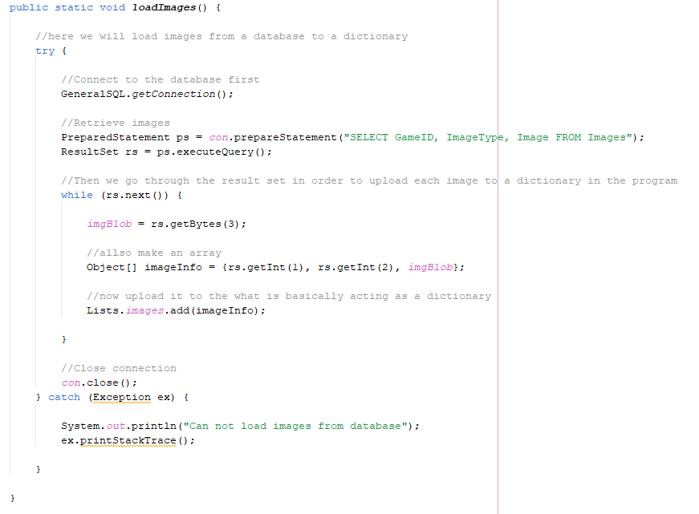Global Package
The Global package can show off a lot more object oriented design and modularity. It hosts classes that will need to be instanced to create unique objects for the program like games, users, and discounts. However it also hosts methods, variables, and even UI elements to be instanced which I will be talking about here
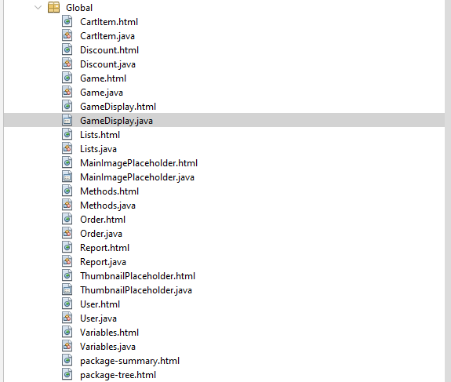Methods
The methods here are mostly used for real time input validation as shown in the example below. Whenever a field is edited or checked these methods are ran to check for validation. Sometimes the difference when can be important because some aspects of data should only be checked when confirming due to it slowing down the program.
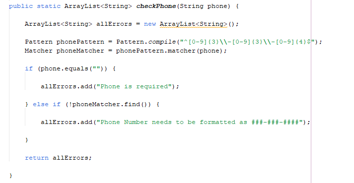For example, this picture below shows checking a username. However it needs to be unique so there is a boolean in place. Only check the unique username upon submission so that it is not checking the database each key press. There is much more validation in this method, but the picture only showcases checking if the username is unique.
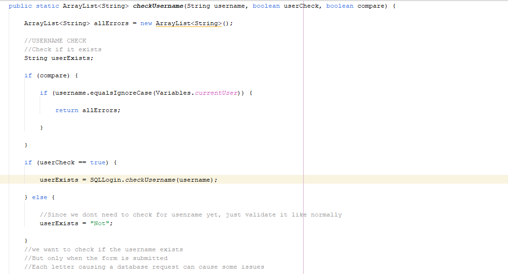After the fields are checked, another method is ran to check the array lsit of errors and will act accordingly depending on if the arraylist has one error. If there is an error, the first error in the list is the text of the given label and that label is set to be visible. However if there are no errors, then the label is set to be invisible.
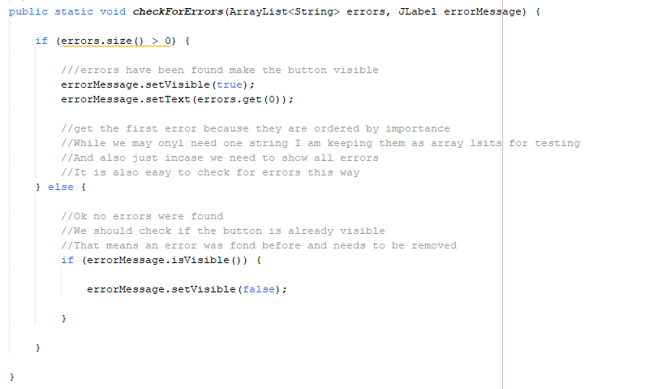There is one other method I would like to talk about and its the getPassword method
This is a simple method, but since I made it into a global script for the program, I can call on this method anytime I please from anywhere and make the information from the password field into a string for whenever I need to.
Variables
There are two classes to host just variables. The first one I have to show is Lists that really just hold array lists that will be needed throughout the program. Like a list of games in inventory, a list of users, a list of discounts, so on and so forth.
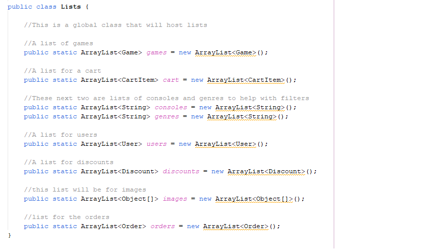The other one just hosts more basic variables like the ID of the user logged in or there level. We can also store who is the current manager or user in a string.
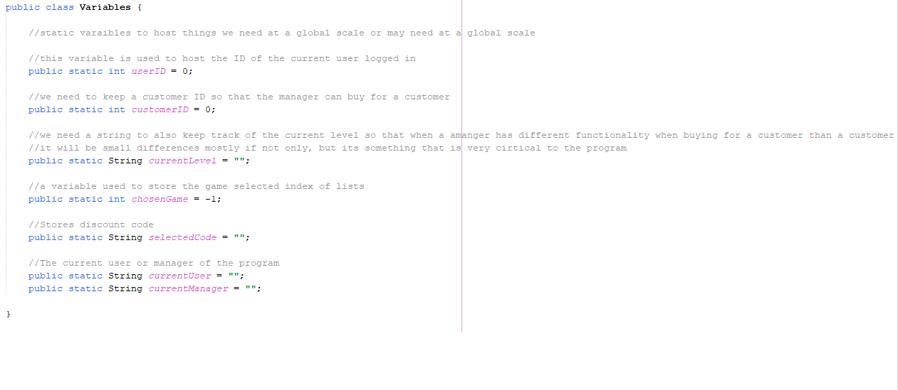Modularizing UI items
With it being a store front I needed a way to showcase inventory to users in a stylized manner that is not just a basic list or table. So I made a class named GameDisplay that is meant to host the ui elements that will display a game
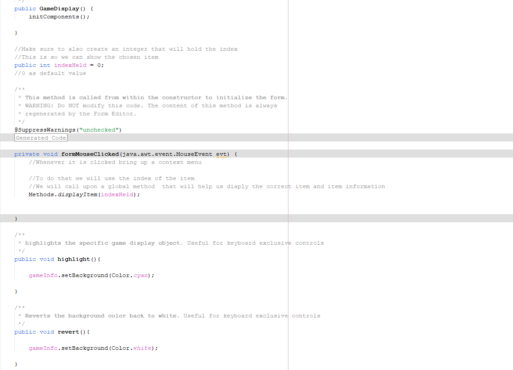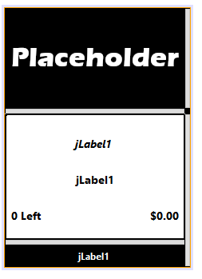
Using a for loop to instance the GameDisplay class one by one and make them display the proper games we get this result for displaying inventory
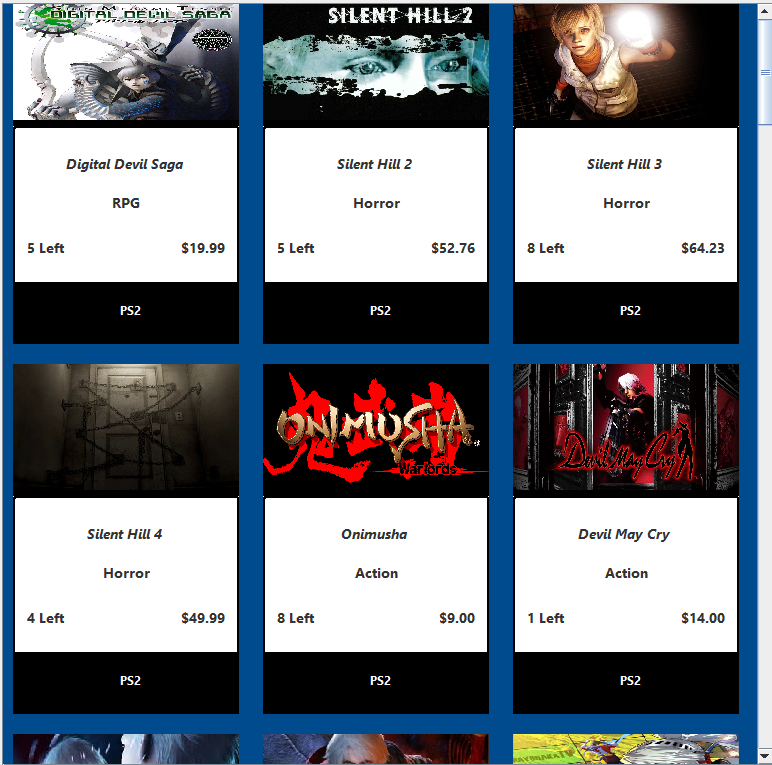For a video demonstration of this project check here: Link
For the master branch of the project click here: Link